아시시 대학 학생의 55%가 장학금을 통해 학업을 이어가며,
경제적 어려움 속에서도 배움의 기회를 제공합니다.
특히 여성의 교육 기회 확대를 중점적으로 추진해, 개교 당시
25%에 불과했던 여성 학생 비율을 현재 50%로 끌어올리며 교육의
포용성과 성평등을 실현하고 있습니다.
hero section

지속가능한 평화를 위해
오늘의 혁신을 만들어갑니다.
2025 제6회 선학평화상 수상자를 만나보세요.

오늘의 혁신을 만들어갑니다.
2025 제6회 선학평화상 수상자를 만나보세요.
2025
SUNAHK
PEACE PRIZE
LAUREATES
slogan section
평화를 향한 행동은 지속가능한 평화를 만듭니다.
행동, 연대, 지속 가능성, 영감을 통해 실직적인 변화를 이끈
4인의 평화의 혁신가들을 소개합니다.
INNOVATION
FOR
PEACE
평화를 위한 혁신을 만들다
patrick awuah jr.
2025 Sunhak Peace Prize Laureate
Patrick Awuah Jr.
패트릭 아우어
SUNHAK PEACE
PRIZE AWARD
The 6th
Sunhak Peace Prize Award
Sunhak Peace Prize
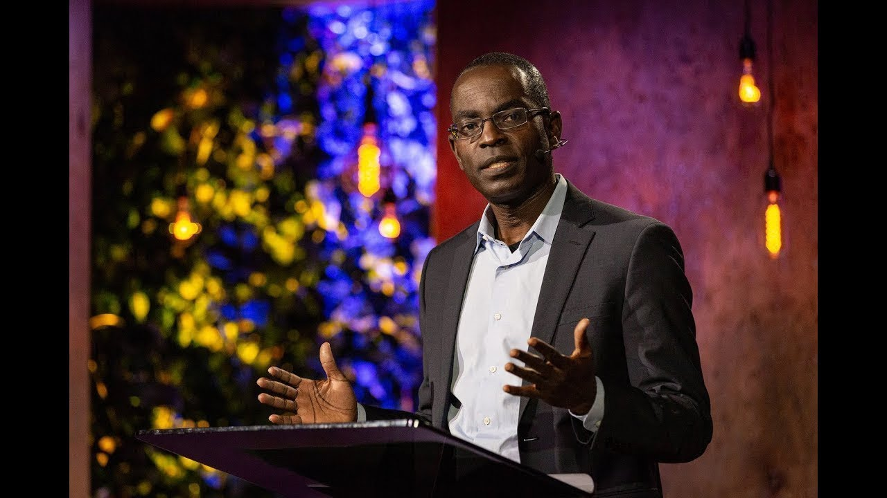
아프리카의 미래를 여는 교육 혁신가
패트릭 아우아는 STEM(과학, 기술, 공학, 수학) 교육과 윤리적
리더십 훈련을 통해 아프리카의 지속 가능한 경제와 사회 발전에
기여한 선구적인 교육가입니다.
그는 교육을 단순한 학습의 도구를 넘어 사회 정의와 변화를
이루는 강력한 매개체로 활용하며, 아프리카의 미래를 이끌 차세대
지도자를 양성해왔습니다.
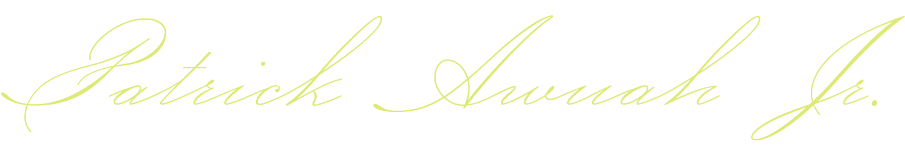
( Achievements )
 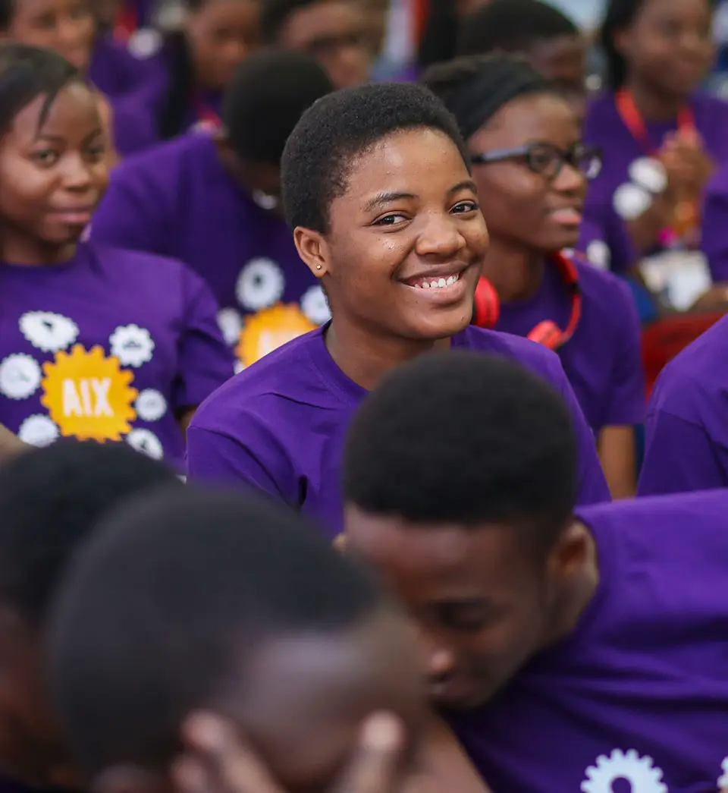
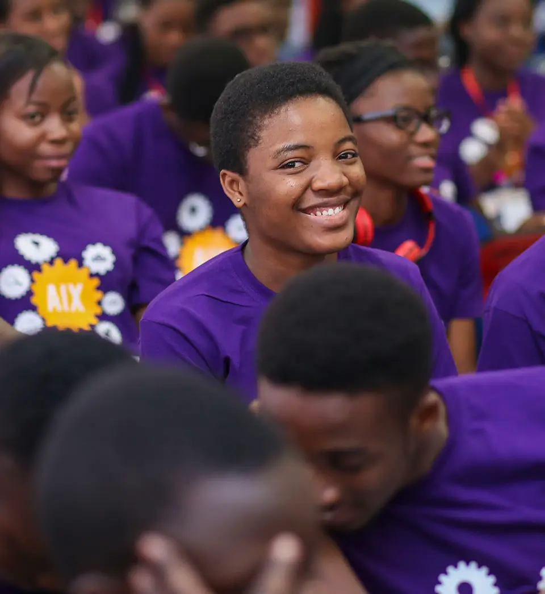
교육의 문을 열다: 접근성과 성평등 증진

아프리카의 미래를 이끌 최첨단 IT 인재 양성
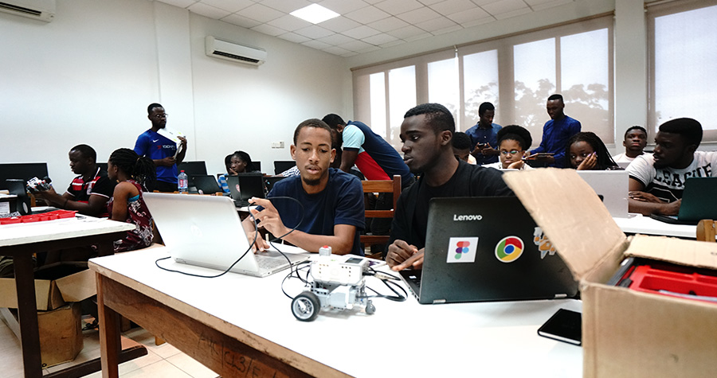
STEM 중심의 실습 위주 교육을 도입하여 아프리카 교육의 패러다임을 획기적으로 변화시켰습니다. 그가 설립한 아시시 대학은 글로벌 경쟁력을 갖춘 인재를 배출하며, 아프리카의 혁신을 이끄는 기반이 되고 있습니다.

아프리카의 미래를 이끌 최첨단 IT 인재 양성
STEM 중심의 실습 위주 교육을 도입하여 아프리카 교육의 패러다임을 획기적으로 변화시켰습니다. 그가 설립한 아시시 대학은 글로벌 경쟁력을 갖춘 인재를 배출하며, 아프리카의 혁신을 이끄는 기반이 되고 있습니다.
( Achievements )
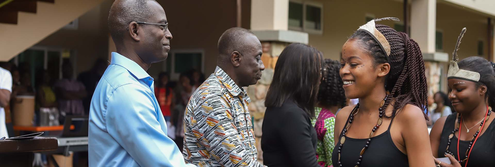
윤리적 리더십으로 부패를 넘어 미래로
아시시 대학은 아프리카 최초로 ‘명예 규율(Honor Code)’을 도입해 자율적 시험 시스템과 부정행위 감시·보고 제도를 정착시켰습니다. 이를 통해 윤리적 문화를 확산시키며, 학생들이 지역사회와 국가 발전에 기여하는 책임감 있는 리더로 성장하도록 돕고 있습니다.
리더들을 바꾸면 대륙을 바꿀 수 있습니다.
다음 세기는 아프리카 세기가 될 것입니다.
- 패트릭 아우어 -
hugh evans
2025 Sunhak Peace Prize Laureate
Hugh Evans
휴 에반스
SUNHAK PEACE
PRIZE AWARD

청년 세대를 선도하는 글로벌 시민 혁신가
휴 에반스는 빈곤 문제에 대한 국제적 인식을 높이고, 시민 행동을 촉진하여 전 세계적으로 지속 가능한 변화를 이끈 인도주의자입니다. 그는 글로벌 시민의 힘을 결집해 빈곤 없는 미래를 꿈꾸며, 이를 실현하는 데 크게 기여해왔습니다.
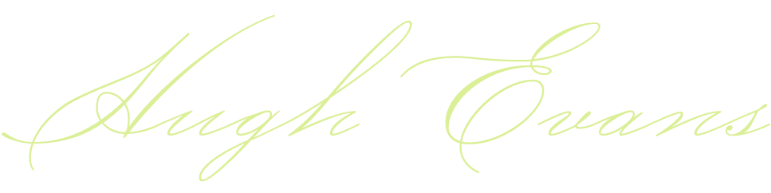
( Achievements )

글로벌 시민 3,400만 명의 행동으로 변화하다
현재 3,400만 명 이상의 회원을 보유한 글로벌 시티즌 플랫폼은 4,290만 건 이상의 시민 행동을 통해 30개 이상의 글로벌 정책 변화를 실현하며 전 세계적으로 지속 가능한 발전을 이끌고 있습니다.
-

- 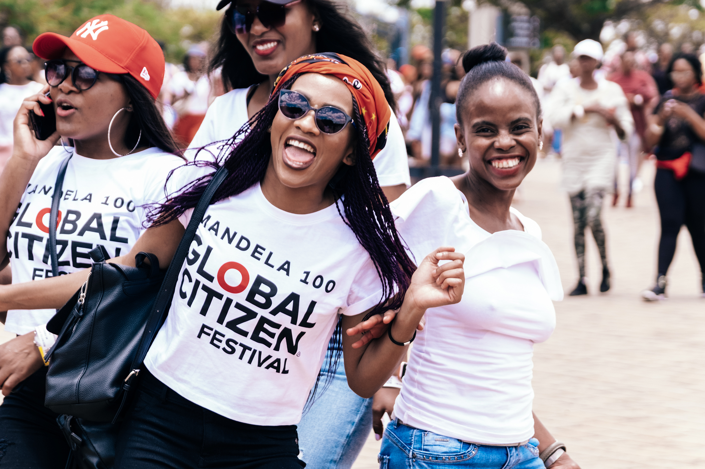

글로벌 시민 3,400만 명의 행동으로 변화하다
현재 3,400만 명 이상의 회원을 보유한 글로벌 시티즌 플랫폼은 4,290만 건 이상의 시민 행동을 통해 30개 이상의 글로벌 정책 변화를 실현하며 전 세계적으로 지속 가능한 발전을 이끌고 있습니다.
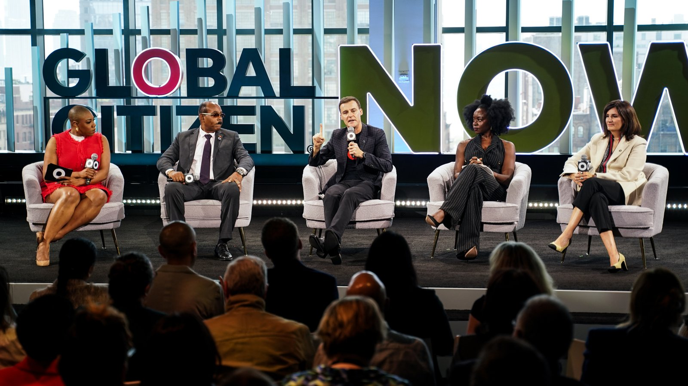
음악과 행동의 결합으로 만든 세계적 변화
2012년 시작된 '글로벌 시티즌 페스티벌'은 비욘세, 리한나, BTS, 블랙핑크 등 세계적 아티스트들이 참여해 단순한 공연 이상의 메시지를 전달하는 장이 되었습니다. 이 축제는 서명 운동과 메시지 캠페인을 통해 관객들이 글로벌 문제 해결에 실질적으로 동참할 수 있는 기회를 제공했습니다.
( Achievements )
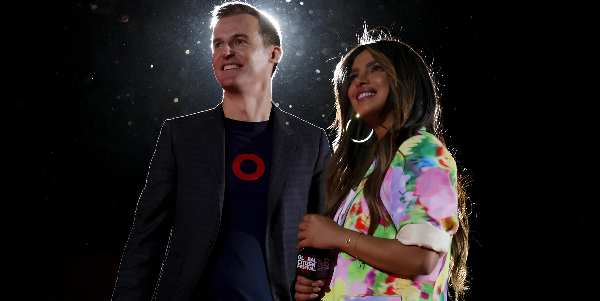
436억 달러의 약속, 13억 명의 삶을 변화시키다
휴 에반스는 빈곤 문제에 대한 국제적 인식을 높이고, 시민
행동을 촉진하여 전 세계적으로 지속 가능한 변화를 이끈
인도주의자입니다.
그는 글로벌 시민의 힘을 결집해 빈곤 없는 미래를 꿈꾸며, 이를
실현하는 데 크게 기여해왔습니다.
빈곤, 기후 변화, 성 불평등 같은 문제는 글로벌 문제입니다.
이를 해결하려면 글로벌 시민이 함께 행동해야 합니다.
- 휴 에반스 -
wanjira mathai
2025 Sunhak Peace Prize Laureate
Wanjira Mathai
완지라 마타이
SUNHAK PEACE
PRIZE AWARD
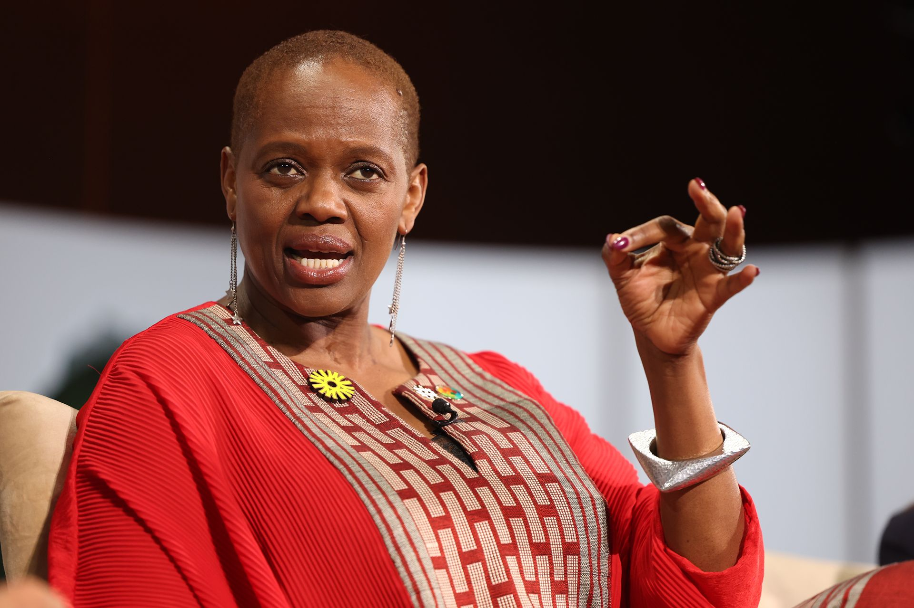
아프리카 생태계 복원의 리더
완지라 마타이는 아프리카 생태계를 복원하고 기후 회복력을 강화하기 위한 혁신적이고 지속 가능한 해법을 제시하며, 전 세계에 환경 보호의 중요성을 알리는 데 앞장서고 있습니다. 그녀의 헌신적인 활동은 환경과 지역사회의 조화로운 발전을 가능하게 했습니다.
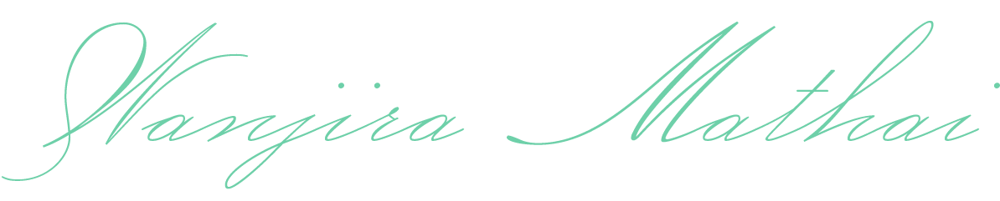
( Achievements )
아프리카에 5,100만 그루의 나무를 심다
완지라 마타이는 아프리카 생태계를 복원하고 기후 회복력을 강화하기 위한 혁신적이고 지속 가능한 해법을 제시하며, 전 세계에 환경 보호의 중요성을 알리는 데 앞장서고 있습니다. 그녀의 헌신적인 활동은 환경과 지역사회의 조화로운 발전을 가능하게 했습니다.
-

-

- 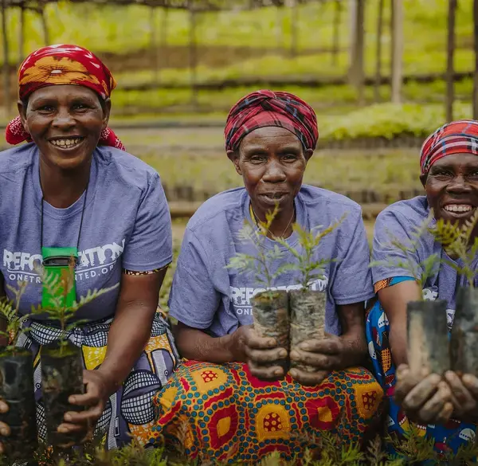
아프리카의 1억 3,000만 헥타르 토지 복원
2030년까지 1억 3,000만 헥타르의 황폐화된 토지를 복원하는
것을 목표로 하는 ‘아프리카 산림경관복원
이니셔티브(AFR100)’를 통해,
지역 주민들에게 경제적 기회를 제공하고 일자리 창출과 삶의 질
향상에도 기여하고 있습니다.
( Achievements )
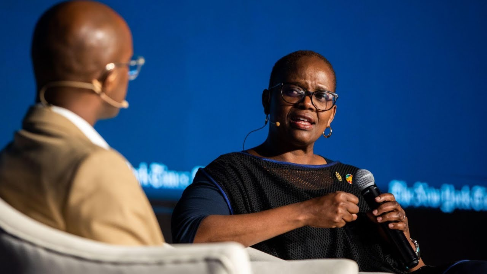
여성 창업가들의 재생 가능 에너지 혁신
‘Women Entrepreneurs in Renewables (wPOWER)’ 프로그램을 통해
약 5,000명의 여성들에게 재생 가능 에너지 창업 교육을 제공하며,
여성들의 경제적 자립을 지원하고 에너지 접근성을 확대하고
있습니다.
미래 세대를 위해 나무를 심는 일은 우리의 책임이자 희망입니다.
- 완지라 마타이 -
사나나 구스마오
2025 Sunhak Peace Prize Laureate
Kay Rala Xanana Gusmão
사나나 구스마오
SUNHAK PEACE
PRIZE AWARD

동티모르 민주주의 발전과 글로벌 화합을 이끈 지도자
사나나 구스마오는 동티모르 독립과 g7+ 창립을 통해 분쟁국 간 협력과 화해의 새로운 모델을 제시했습니다. 그의 리더십은 동티모르를 안정된 민주주의 국가로 자리잡게 했으며, 글로벌 분쟁국들에게 연대와 희망의 모델을 제시했습니다.

( Achievements )
동티모르 독립과 민주주의를 이끈 상징적 리더
사나나 구스마오는 동티모르 독립을 위한 무장 운동을 이끌었고, 1992년 체포되어 7년간 투옥되었습니다. 1999년 동티모르는 독립을 얻었고, 2002년 구스마오는 초대 대통령으로 선출되었습니다. 이후 총리로서 국가 재건과 경제 회복을 이끌며 동티모르를 민주주의 국가로 발전시켰습니다.
국제 협력을 통한 국가 재건과 평화 증진
동티모르 독립 후 구스마오는 유엔과 국제사회와 협력해 국가 재건을 이끌었습니다. 유엔 미션을 통해 치안, 경제 회복, 민주적 제도 구축을 지원받아 안정적인 미래를 위한 기틀을 마련했습니다. 또한 외교 관계 강화를 통해 국제적 위상을 높여 사하로프 인권상과 광주인권상을 수상했습니다.


( Achievements )
g7+ 창립, 분쟁국 연대의 글로벌 플랫폼 구축
2010년, 구스마오는 g7+를 창립해 22개 분쟁국이 평화와 재건을 위해 협력할 수 있는 플랫폼을 제공했습니다. 그는 글로벌 정책에 분쟁국의 요구를 반영하도록 촉구하며 재건과 평화 모델을 제시했습니다. g7+는 분쟁 해결과 지속 가능한 발전을 위한 모범 사례로 평가받고 있습니다.
전쟁은 끝나더라도 인간관계는 지속되어야 합니다.
평화와 화합이 진정한 승리입니다.
-사나나 구스마-
announcement section
( Announcement )
제6회 선학평화상은 2025년 4월 11일 서울에서 개최합니다.
-
THE 6th
Sunhak Peace
Prize Award

-
will take place
 on April 11, 2025,
on April 11, 2025,
-
 in Seoul, Korea
in Seoul, Korea
-
on April 11, 2025,
in Seoul, Korea
laureates gallery
( Gallery )
선학평화상을 빛낸 역대 수상자들을 만나보세요.
sunhak peace prizeLaureates from 2015 to 2022

2015 LAUREATE
Anote Tong

2017 LAUREATE
Sakena Yacoobi

2019 LAUREATE
Akinwumi Ayodeji Adesina

2020 LAUREATE
Munib A. Younan

2020 FOUNDERS’ AWARD LAUREATE
Ban Ki-moon

2022 LAUREATE
Gavi, The Vaccine Alliance

2022 LAUREATE
Dame Sarah Catherine Gilbert

2022 FOUNDERS’ AWARD LAUREATE
Hun Sen